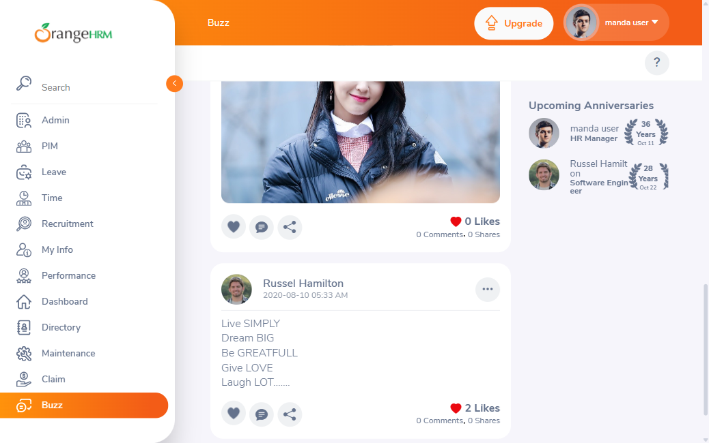
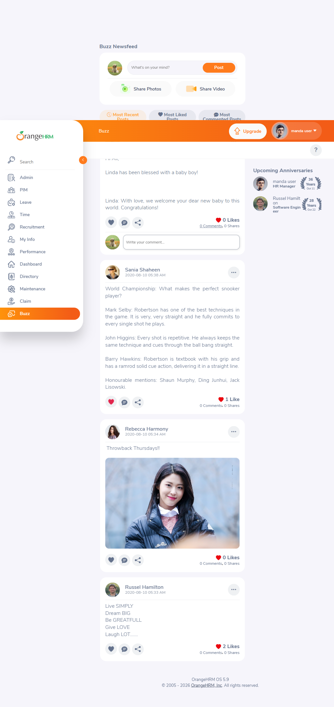
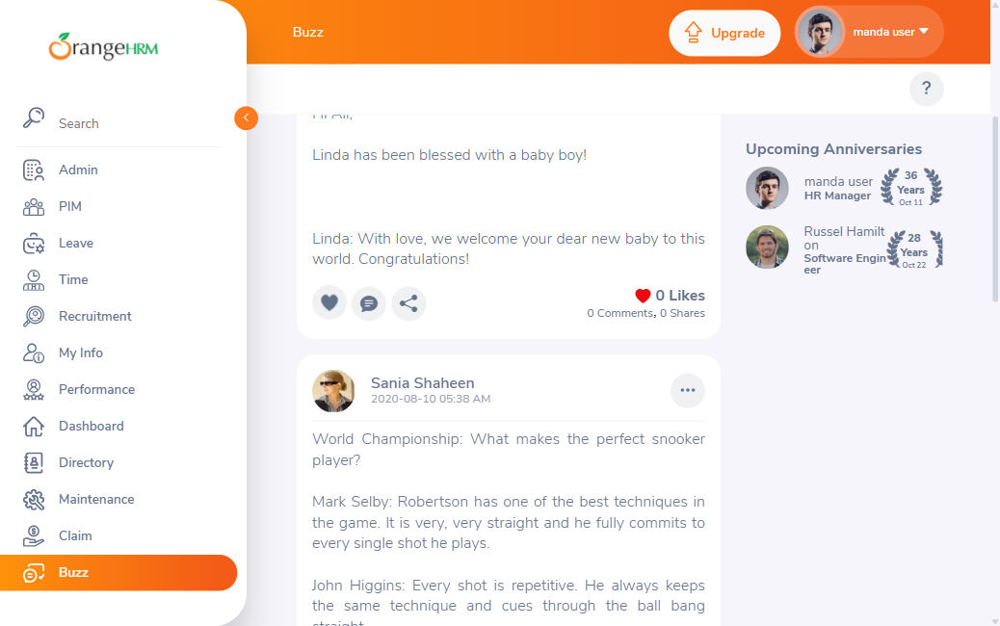
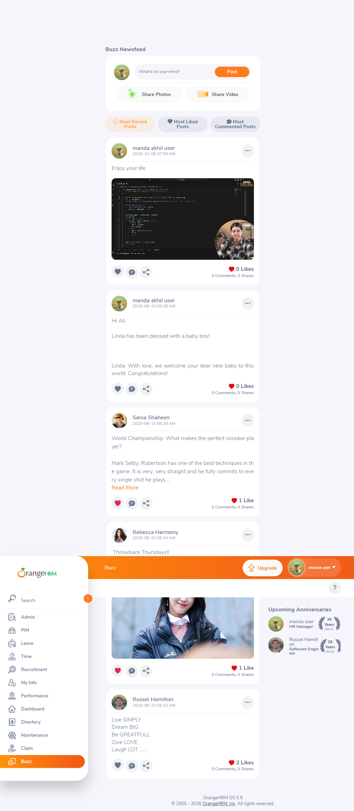
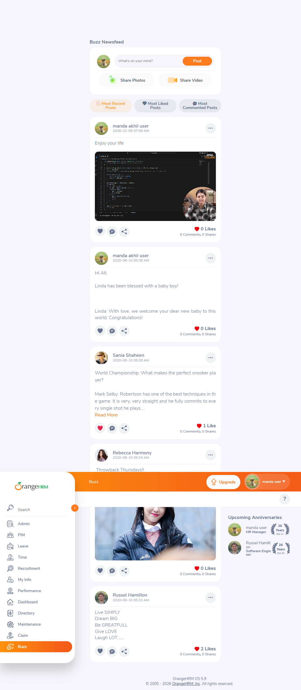
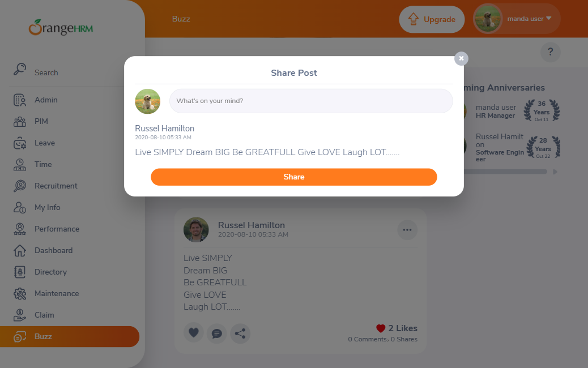

Test Case Results (TC-001 – TC-020, all executed)
TC-001Post composer displays required controlsPASS
Expected: Composer shows "What's on your mind?" textbox, Post button, Share Photos button, Share Video button.
Actual: All four controls present and rendered exactly as expected.

TC-002Feed post card displays author, timestamp, content, countersPASS
Expected: Each card shows author, avatar, timestamp, content, and Like/Comment/Share counters.
Actual: Confirmed on all cards present at observation time.
Note: Precondition cited the original 4-post snapshot; a 5th post ("Enjoy your life") had already appeared by the time this screenshot was taken (see environmental note above) and also displays all required elements correctly.

TC-003Default feed filter is 'Most Recent Posts'PASS
Expected: "Most Recent Posts" active by default; posts in reverse-chronological order.
Actual: Confirmed — button carried the active (label-warn) CSS class and feed order matched timestamps descending (05:38, 05:38, 05:34, 05:33).
TC-004'Most Liked Posts' filter sorts descending by Like countPASS
Expected: Feed re-sorts descending by Like count; button gains active state.
Actual: Order became Russel Hamilton (2) → Sania Shaheen (1) → Rebecca Harmony (0) → manda akhil user (0); "Most Liked Posts" button gained the active class.

TC-005'Most Recent Posts' restores original feed orderPASS
Expected: Order restored exactly to reverse-chronological; re-sorting is non-destructive.
Actual: Confirmed — order and like counts identical to the pre-filter baseline; "Most Recent Posts" regained active state.

TC-006Upcoming Anniversaries panel displays and is non-interactivePASS
Expected: Panel shows avatar/name/title/year-badge/date; clicking an entry has no effect.
Actual: Panel displayed correctly (manda user – 36 Years – Oct 11; Russel Hamilton – 28 Years – Oct 22); click on an entry produced no navigation and no visible change (URL unchanged).


TC-007'Read More' expands truncated post textPASS
Expected: Full text becomes visible; "Read More" link disappears; no "Show Less" appears afterward.
Actual: Confirmed — Sania Shaheen's full post text is visible after the click, "Read More" link is gone, no collapse control appeared.


TC-008Like/Unlike toggle updates count and icon statePASS
Expected: Like → "1 Like" + solid red heart; Unlike → back to "0 Likes" + grey outline heart.
Actual: Confirmed on Rebecca Harmony's post (started at 0 Likes). After Like: "1 Like", solid red heart. After Unlike: "0 Likes", grey outline heart. Reversal confirmed successful.
Tooling note: The heart icon has no accessible name and uses a duplicated, non-unique id="heart-svg" across every post (confirms exploration §4 finding). A generic element click on the icon's wrapper sometimes needed a direct DOM event dispatch to register reliably — an automation-readiness concern for Milestone 5, not a functional defect.


TC-009Comment toggle expands/collapses inline comment boxPASS
Expected: Click expands an inline "Write your comment..." textbox with no navigation; clicking again collapses it with no side effects.
Actual: Confirmed on manda akhil user's "Hi All..." post. No text was typed or submitted.



TC-010Options menu on own post shows Edit Post and Delete PostPASS
Expected: Menu shows exactly "Edit Post" and "Delete Post" on the logged-in user's own post.
Actual: Confirmed on the new "Enjoy your life" post authored by manda akhil user (the logged-in account). Neither item was clicked; menu was dismissed via Escape.

TC-011Options menu on another author's post shows Delete Post onlyPASS
Expected: Menu shows exactly one item, "Delete Post", no "Edit Post".
Actual: Confirmed on Sania Shaheen's post — only "Delete Post" shown. Item was not clicked.

TC-012Share Photos 'Share' button disabled until photo attachedPASS
Expected: "Share" button disabled while no photo is attached.
Actual: Confirmed disabled (disabled attribute present) with no photo attached. Modal closed via the "×" button without attaching anything.

TC-013Clicking attached photo opens full-screen lightboxPASS
Expected: Full-screen lightbox with enlarged image and an independent post-detail panel; closes cleanly with no residual state change.
Actual: Confirmed on Rebecca Harmony's photo post. Lightbox opened with enlarged image plus its own author/timestamp/caption/Like-Comment-Share panel. Closed via "×"; feed returned to its prior state.
Tooling note (important): The visible <img> is not the actual click target — a same-sized overlay <div class="orangehrm-buzz-post-body-picture"> intercepts pointer events and must be targeted instead. During attempts to locate the correct clickable element, two accidental Like-toggles were triggered on this same post by an MCP tool locator-resolution issue (see below); both were detected immediately via a like-count re-check and reversed before proceeding. Net effect on the post after this test case: 0 Likes, matching its original baseline.
Test-tooling issue observed: The Playwright MCP browser_click tool, when given specific element refs (f3e344) for a plain <img>, twice resolved the click to an unrelated cached locator (#heart-svg nth(3)) instead of the element actually referenced — even immediately after a fresh accessibility snapshot. This looks like a locator-resolution/caching bug in the MCP tool rather than an application defect. It was worked around by using an explicit, disambiguated CSS selector for the overlay div. Recommended to flag to whoever maintains the Playwright MCP server.




TC-014Share Post (repost) modal opens with optional captionPASS
Expected: Dialog opens with read-only preview of the original post and optional caption box; "Share" enabled with no caption.
Actual: Confirmed on Russel Hamilton's post — preview shown, "Share" button enabled (solid orange) with the caption field empty. Closed via "×" without submitting.

TC-015Post author name/avatar click produces no navigationPASS
Expected: Neither click navigates away; URL stays on /buzz/viewBuzz.
Actual: Confirmed for both the author name and avatar image (Sania Shaheen's post) — URL unchanged in both cases.

TC-016Topbar 'Help' button opens external site in new tabPASS
Expected: New tab opens to https://starterhelp.orangehrm.com/hc/en-us.
Actual: Confirmed — a second browser tab opened to exactly that URL. Tab was closed afterward with no other side effects.

TC-017Profile menu shows About/Support/Change Password/Logout on Buzz pagePASS
Expected: Menu shows About, Support, Change Password, Logout.
Actual: Confirmed, all four items present in that order. No item was selected; menu dismissed via Escape.

TC-018Feed displays all posts with no pagination at current volumePASS
Expected: No pagination/infinite-scroll controls; footer appears immediately after the last post.
Actual: Confirmed — footer appears immediately after the last (now 5th, see environmental note) post, with no pagination or "load more" control at any point. The core assertion (no pagination mechanism exists) is volume-independent and was verified against the live 5-post state.

TC-019Share Video 'Share' button not disabled despite empty Video URL (defect candidate)PASS
Expected (defect candidate): "Share" button remains enabled/clickable despite the Video URL field being empty — a validation asymmetry vs. Share Photos.
Actual: Confirmed — disabled attribute is false on the Share button with the Video URL field empty. Defect reproduced as anticipated by the test design. See DEFECT-001 below. Modal closed via "×" without submitting.
TC-020'Most Liked' vs 'Most Commented' tie-break order differsPASS
Expected: The two filters order same-count posts differently, indicating independent secondary sort keys.
Actual (re-derived against live 5-post data, see environmental note):
- Most Liked Posts order: Russel Hamilton (2) → Sania Shaheen (1) → Rebecca Harmony (0) → manda akhil user "Hi All" (0) → manda akhil user "Enjoy your life" (0)
- Most Commented Posts order (all 5 posts tied at 0 Comments): Russel Hamilton → Rebecca Harmony → Sania Shaheen → manda akhil user "Hi All" → manda akhil user "Enjoy your life"
Because all 5 posts are tied at 0 Comments, the "Most Commented" order is entirely the secondary sort key in effect. That key places Sania Shaheen (which has an actual Like) behind Rebecca Harmony (0 Likes) — i.e. it is not influenced by Like count at all — whereas "Most Liked" naturally ranks Sania above Rebecca by Like count. This confirms the two filters use genuinely independent secondary/tie-break keys, matching the original exploration hypothesis, though the specific named example differs from the original 4-post snapshot because of the mid-run 5th post (environmental note above). Filter was reset to "Most Recent Posts" afterward.


Blocked Cases (TC-021 – TC-027) — excluded by Interaction Policy
All seven remaining cases require creating permanent, visible-to-others content on the shared public demo (posting, uploading, commenting, reposting) or a server-side/API-level probe of a permission boundary. Per the ui-exploration skill's Interaction Policy (carried forward by the test-execution skill) and the test-design CSV's own preconditions ("a disposable/sandboxed instance..."), none of these were authorized for this run and none were attempted.
TC-021Publish a new text post via composerBLOCKED
TC-022Upload a photo via Share Photos and publishBLOCKED
TC-023Submit Share Video with a valid URLBLOCKED
TC-024Submit Share Video with an empty URL (defect verification)BLOCKED
TC-025Submit a comment on a postBLOCKED
TC-026Submit a repost via Share Post modalBLOCKED
TC-027Verify server-side enforcement of Edit Post permissionBLOCKED
Formal Defects
DEFECT-001 — Share Video allows submission with empty Video URL (Share button not disabled)
- Affected screen/module
- Buzz Newsfeed — Share Video modal (
/web/index.php/buzz/viewBuzz) - Preconditions
- Logged in as demo Admin-role user; on Buzz Newsfeed page.
- Reproduction steps
-
1. Click "Share Video" in the composer.
2. Leave the "Paste Video URL" field empty.
3. Observe the "Share" button's enabled/disabled state (do not click Share). - Actual result
- The "Share" button remains enabled (
disabled === false) with the Video URL field empty. - Expected result
- By analogy with the equivalent Share Photos flow (TC-012), where "Share" is disabled until a photo is attached, "Share" should be disabled while the Video URL field is empty.
- Evidence
execution/evidence/TC-019_01_share_video_empty_url.png,execution/evidence/TC-012_01_share_photos_disabled.png(contrast)- Reproducibility
- 1/1 attempts this run; consistent with the original exploration finding (§3.4/§5 discrepancy 2), so effectively 2/2 across sessions.
- Severity / Priority
- High / High — no functional crash, but a client-side validation gap that could let users submit a broken/empty video post; whether the server also rejects it is unknown (see TC-024, blocked this run).
- Affected TC IDs
- TC-019 (confirms), TC-024 (blocked follow-up — would determine actual submission outcome)
Findings Summary — carry into Milestone 5 automation
- Confirmed stable behaviors suitable for automation: filter sorting (TC-003/004/005), Read More expand (TC-007), Like/Unlike toggle (TC-008), comment box expand/collapse (TC-009), per-post options-menu permission model (TC-010/011), Share Photos validation (TC-012), photo lightbox (TC-013), repost modal (TC-014), no-navigation on author click (TC-015), Help link (TC-016), profile menu (TC-017).
- DEFECT-001 (Share Video validation asymmetry) is now a confirmed, reproducible defect — worth a dedicated regression check once fixed, and worth automating the negative case (assert button is/isn't disabled) regardless.
- Locator hazards for automation: the Like heart uses a duplicated, non-unique
id="heart-svg"across every post (must be selected by DOM structure/ordinal position, not by id or accessible name — none of the icon buttons expose one). The clickable region for a post's photo is a same-sized overlay<div>, not the<img>itself — automation must target that div. - Modal dismissal: Escape does not close the Share Photos / Share Video dialogs (confirmed this run); only the "×" button does. Automation should not rely on Escape as a universal modal-close shortcut on this page. (Escape did work for the "..." options menu and the profile dropdown.)
- Shared-demo volatility: because this is a public shared demo, post count and content can change between/during runs from unrelated real users. Automated checks should assert on relative structure and named seed posts where possible, rather than hard-coding an exact post count.
- Tooling reliability (this run's environment, not the app): the Playwright MCP
browser_clicktool twice mis-resolved a specific element ref to an unrelated cached locator, causing two accidental Like-toggle side effects that were caught and reversed immediately. Flagged for whoever operates the MCP server; not an application defect.
Exit Assessment
Fully validated (20/27)
TC-001 through TC-020 — all structural, UI, and functional assertions in scope for this run reached a definitive PASS with screenshot evidence. One defect (DEFECT-001) was formally raised from TC-019.
Blocked (7/27)
TC-021–TC-027 — all excluded by the Interaction Policy (content-creation on the shared public demo) or requiring API-level/security testing outside this run's authorization. None attempted.
Remains untested / out of scope
Whether DEFECT-001's enabled-but-unvalidated Share button actually produces a broken post server-side (TC-024); whether the Edit-Post permission model is enforced server-side or only in the UI (TC-027); actual publish/upload/comment/repost submission behavior (TC-021/022/023/025/026). All require either a disposable/sandboxed OrangeHRM instance or explicit run-level authorization to create content on the shared demo.
What should inform Milestone 5
Automate the 20 confirmed PASS cases first, using the overlay-div and DOM-structure locator strategies noted above. Prioritize a disposable-instance run to unblock TC-021–027, especially TC-024 and TC-027 given DEFECT-001 and the unresolved server-side-enforcement question.